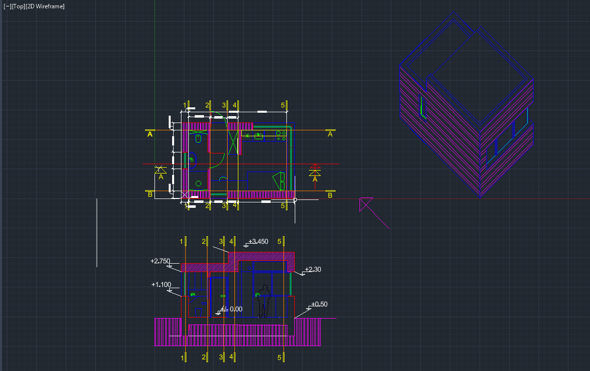

Tools: AutoCAD · 2D drafting · layers · hatching · dimensioning · 3D axonometric
To prepare for my internship at Gallo, I challenged myself to draft a complete set of 2D floor plans for a house and finish with a 3D view. I used a house model with useful pictures to model the draft from. During my first internship when I entered university as a civil engineering major, there was always a general rule of 3 views limit in drawings.

ALthough this "project" wasn't as in depth in making the largest house, it prepared me to be aware of the common industry practices from measuring to distance scaling for further processing when handed down to others to understand. i write this incerpt with time into my current role, where I've had to draft adaptations to the warehouse to similar form of this project and present that to other staff to interpret my drawings. Truly, benefical to kickoff my work into Autocad.